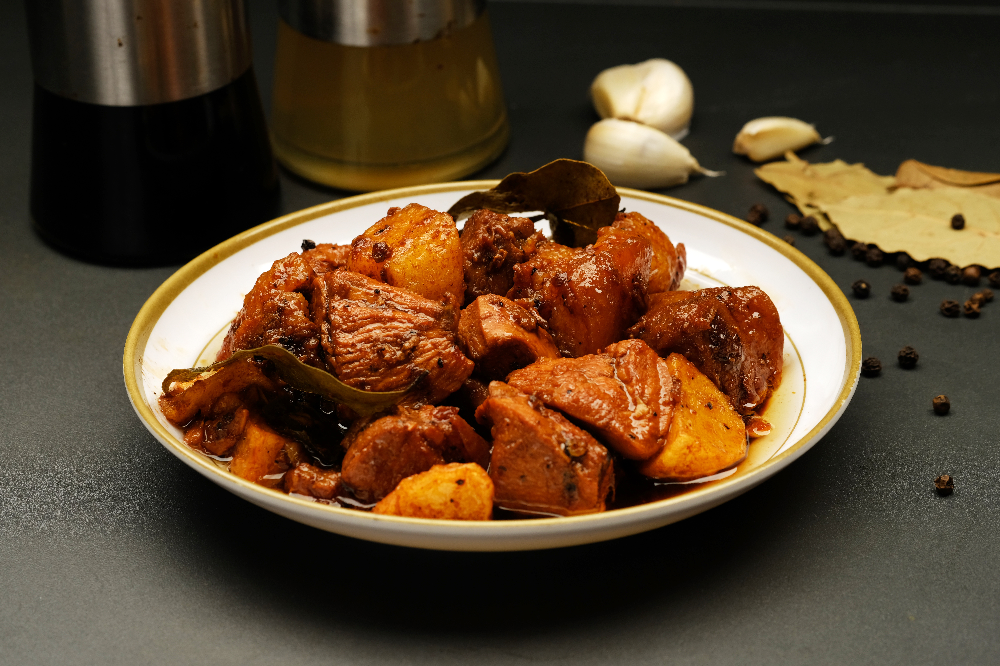

Home Page
Adobo

Description
Filipino adobo is a savory and flavorful dish made by simmering chicken or
pork in a mixture of soy sauce, vinegar, garlic, and spices. The meat
becomes tender as it absorbs the rich, tangy sauce.
Adobo is commonly served with steamed white rice, which helps balance the
bold flavors of the sauce.
Ingredients
- 2 pounds chicken thighs or pork, cut into pieces
- 1/2 cup soy sauce
- 1/2 cup vinegar
- 1 cup water
- 6 cloves garlic, minced
- 2 bay leaves
- 1 teaspoon whole black peppercorns
- 1 tablespoon cooking oil
- Steamed white rice, for serving
Steps
-
Combine the chicken or pork, soy sauce, garlic, bay leaves, and black
peppercorns in a bowl. Marinate for at least 30 minutes.
-
Heat the cooking oil in a pot over medium heat. Remove the meat from the
marinade and brown it on all sides.
-
Add the marinade, vinegar, and water to the pot. Bring the mixture to a
boil without stirring.
-
Reduce the heat, cover the pot, and simmer for 30 to 40 minutes, or
until the meat is tender.
-
Remove the cover and continue simmering until the sauce thickens and
becomes flavorful.
- Serve the adobo hot with steamed white rice.